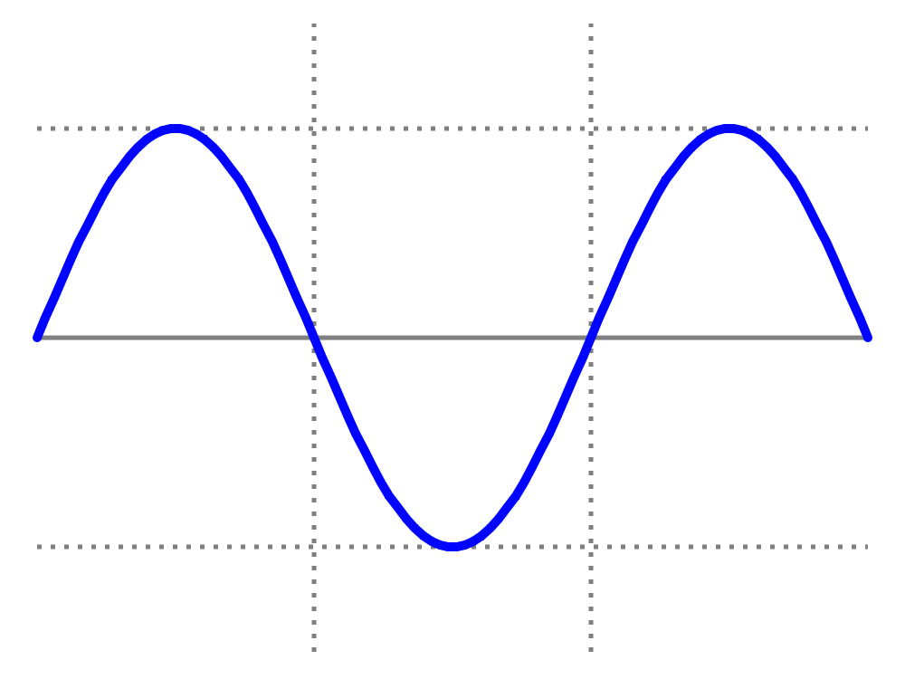
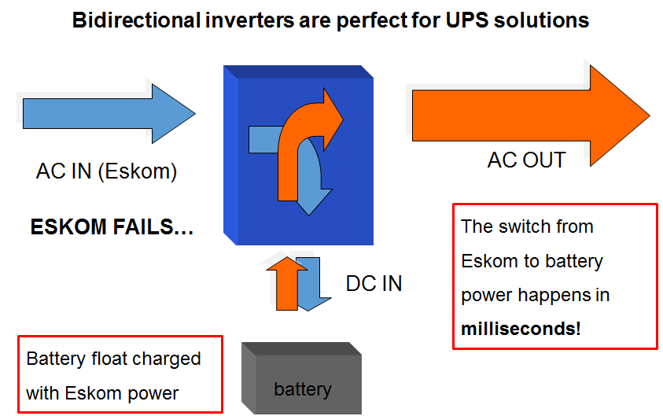
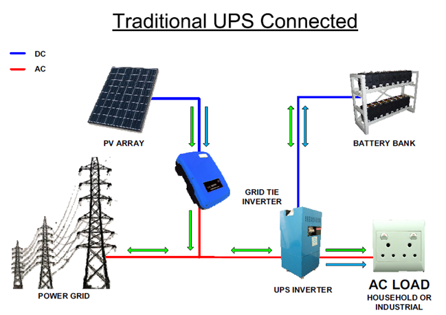

|
Inverter Basics
A solar inverter is an electronic device that will convert Direct Current (DC) battery/solar panel voltage into Alternating Current (AC) mains type power, suitable for use in the home or business.
Inverters.
The inverter could be considered the spindle around which the rest of the equipment in a renewable / alternative / independent energy system revolves and is a complex instrument.
An inverter could best be described as a power adapter. It allows a battery-based or solar panel system to run conventional appliances through conventional home wiring.
There are ways to use lower voltage DC directly, but for a modern lifestyle, you will need an inverter for the vast majority, if not all of your loads (loads are devices that use electrical energy).
You don't have to understand an inverters exact inner functioning, but you should at least know some of its basic functions, capabilities, and limitations.
The inverter with a battery or battery bank can serve as part of a back-up system when grid electricity interruptions or failure occur, or can act as a fully-fledged grid independent (off-grid) system.
Inverters are available in many different sizes, voltages and types. The correct choice of inverter will depend on a number of factors relating to power requirement and application.
Terminology.
Lets discuss some basic terminology often used when discussing inverters.
Watts.
Watts are basically just a measure of how much power a device uses when turned on. It is a basic unit of electricity. The watt is used to specify the rate at which electrical energy is dissipated, or the rate at which electromagnetic energy is radiated, absorbed, or dissipated.
There is no such thing as “watts per hour” or “watts per day”. If something uses 100 Watts, it is simply the voltage x the amps. Whether it pulls 10 Amps at 12 volts or 1 Amp at 120 Volts, it is still uses 120 Watt.
Technically, a Watt is defined as a bunch of Joules per second - saying watts per hour is like saying km per hour per day.
Watt-hours.
A Watt-hour (or kilowatt-hour, kWh) is simply the Watt rating x the number of hours in use. When people refer to their average energy consumption per day they often say for example 35 kWh.
Watt-hours are a measure of energy consumption. If a light uses 100 watts and it is on for 10 hours, then 100 x 10 = 1000 Wh were consumed.
If a kettle uses 2000 Watts and it is on for 6 minutes ( 6/60 = 0.1 hours), then 2000 x 0.1 = 200 Wh were consumed. When you buy “power” from Eskom, they sell it to you at so much per kWh.
A kWh is a kilowatt hour, or 1000 watts for one hour. Or 1 Watt for 1000 hours.
Amps.
An Amp is a measure of electrical CURRENT at a given moment. (Amps do not come in “Amps per hour” either. Amps are important because it determines what wire size you need, especially on the low voltage DC side of the inverter.
A wire has resistance and amps flowing through it makes heat. If the wire is too small, you get hot wires! You also lose voltage if the wire is too small. Some of the voltage becomes heat. This is not a good thing!
Technically an Amp is defined as so many electrons per second.
Amp-hours.
Amp-hours (or Ah for short) are what most people mean when they say “amps per hour”. Amps x hours = Ah. Ah is important, it is the main measure of battery capacity. Since most inverters run from batteries, their Ah capacity will determine how long you can run.
Output power.
A power inverter will often have an overall power rating expressed in watts or kilowatts. This describes the power that will be available to the device the inverter is driving and, indirectly, the power that will be needed from the DC source.
Smaller popular consumer and commercial devices designed to mimic line power typically range from 150 to 3000 watts.
Not all inverter applications are solely or primarily concerned with power delivery; in some cases the frequency and or waveform properties are used by the follow-on circuit or device.
Peak (surge) Power.
Peak is the maximum power that the inverter can supply, usually for only a short time. Surge rating will be specified for a certain wattage and a certain number of seconds. Will handle an overload for this period of time.
The 3 kW Microcare inverter looks like this:
Overload - 120% - 3 min 150% - 1 min 200% - 30 seconds
This equats to 3 600 Watts for 3 minutes, 4 500 Watts for 60 seconds, 6 kW for 30 seconds
Surge capacity can vary considerably between different inverters
Continuous power.
Continuous is what the inverter has to supply on a steady basis. Much lower than the surge requirement. Here are some examples of continuous power.
- What the fridge uses after the first few seconds it takes for the motor to start up.
- What it takes to run a non-inductive load like a microwave.
Basically the sum of all loads running simultaneously
Power ratings of inverters.
Inverters come in sizes ranging from 50 Watt up to 100 kW, although units larger than 10 kW are seldom used in household PV systems.
One of the important things to know about your inverter is what its maximum surge rating will be and for how long it could maintain this load before overloading and shutting off.
Sine wave.
The sine wave or sinusoid is a mathematical curve that describes a smooth repetitive oscillation. It is named after the function sine, of which it is the graph. It occurs often in pure and applied mathematics, as well as physics, engineering, signal processing and many other fields.
Inverter Wave Types.
Square wave inverters.
This is one of the simplest waveforms an inverter design can produce and is best suited to low-sensitivity applications such as lighting and heating. Square wave output can produce "humming" when connected to audio equipment and is generally unsuitable for sensitive electronics.
Sine wave inverters.
A power inverter device which produces a multiple step sinusoidal AC waveform is referred to as a sine wave inverter.

Modified sine wave inverters (MSW).
This is one of the simplest waveforms an inverter design can produce and is best suited to low-sensitivity applications such as lighting and heating. Square wave output can produce "humming" when connected to audio equipment and is generally unsuitable for sensitive electronics.
Pure sine wave inverters (PSW).
The power wave when viewed on an oscilloscope is a smooth sine wave.
These inverters produce power that is identical or many times better than that from Eskom.
Comparison of PSW versus MSW inverters.
Modified sine wave inverters (MSW).
- Power wave not exactly the same as electricity from the grid.
- Wave form is choppy squared off wave when viewed through oscilloscope.
- Most common on the market, especially in smaller sizes.
- Output not always suitable for loads such as motors, transformers or transformer-driven appliances.
- Often lack any overload capability - very difficult to protect these inverters electronically.
- Less efficient in the conversion of energy, motors, pumps, fans, will use 20% more power from the inverter - more power is wasted.
- Appliances with electronic timers and/or digital clocks will often not operate correctly.
- Can produce interference or noise - audible in radios and visible on TV. Some equipment such as fans can make additional noise and they can overheat.
- Fluorescent lights not quite as bright - may buzz or make humming noises.
- Appliances with electronic timers and/or digital clocks will often not operate correctly.
It is much cheaper than Pure Sine Wave inverters
Can be used for small and simple loads such as camping sites to connect some lights and TV and run other light loads for a short times.
We do not recommend to use this type of inverter for permanent installations or for Domestic Applications.
Pure sine wave inverters.
- What you get from the Eskom grid and (usually) from a generator.
- When viewed on an oscilloscope - a smooth sine wave.
- Produce power that is identical or many times better than that from Eskom.
- All of the equipment sold on the market is designed for a sine wave.
- Some appliances, such as motors and microwave ovens will only produce full output with sine wave power.
- Less efficient in the conversion of energy, motors, pumps, fans, will use 20% more power from the inverter - more power is wasted.
- Can be efficiently electronically protected in overload, over voltage, under voltage and over temperature conditions.
- Much better performance.
- Inductive loads like microwave ovens and fridge motors run correctly, quieter and cooler, thus increasing life span.
- Reduces audible and electrical noise in fans, fluorescent lights, audio amplifiers, TV, Game consoles, Fax, and answering machines.
- Prevents crashes in computers, bad print outs, glitches and noise in monitors.
- More expensive but much more reliable.
We recommend a PSW inverter for permanent installations or for Domestic Applications.
Types of Inverters.
Grid tied Inverters.
Off grid inverters .
Grid tied Inverters.
Standalone inverters.
This is a basic inverter and its only job is to convert a given nominal battery voltage into 220 VAC.
These inverters are available in MSW or PSW versions and in 12V,24V or 48V.
All Modified Sine Wave inverters are standalone.
Bidirectional inverters.
These inverters have and AC input additional to the standard AC output of a stand alone inverter. Sometimes they have 2 AC inputs.
This inverter can be connected to and AC source (AC in) like Eskom or even a generator to serve as a back up source of energy.
These inverters also have a built in battery charger.
- DC IN and AC OUT (converting battery DC voltage into 220 VAC )
- AC IN and AC OUT ( AC source of energy supplying the loads)
- AC IN and DC OUT ( AC source of energy charging the battery bank)

Victron Multiplus Inverters allows for parallel connections of inverters!.
Grid tied inverters.
These inverters are connected directly to an array of PV panels. They are designed to work with DC voltages typically ranging between 100 and 800 VDC, depending on their size.
These inverters generates electricity from the array of PV panels and feeds excess capacity back to the local mains electrical grid for use later

Off grid inverters.
Off grid inverters are used with battery banks and are designed to work with specific nominal DC voltages - 12, 24, 36 or 48 volts.

A particular inverter can only be used with its designed nominal voltage. You can’t use a 24 V inverter with a 48 V battery bank.
An Off-grid solar PV system is expensive so it is important to find means to reduce your energy requirement and have a wide range of energy resources.
But when you install a system with batteries, you have to stay on top of things. The battery or battery pack is the core of any off-grid system, and it drives the system's cost.
GridTied versus Off Grid PV System.
| SYSTEM |
ADVANTAGES |
DISADVANTAGES |
| Grid tied |
No batteries required |
Dependent on Eskom |
| |
Much lower cost |
Dependent on meter |
| |
No limitation on demand |
No energy during blackout |
| |
Almost no maintenance |
|
| Off grid |
Independent of Eskom |
High initial investment |
| |
Reliable source |
Limited energy demand |
| |
Not affected by blackout |
Battery bank maintenance |
| |
Energy security |
|
|